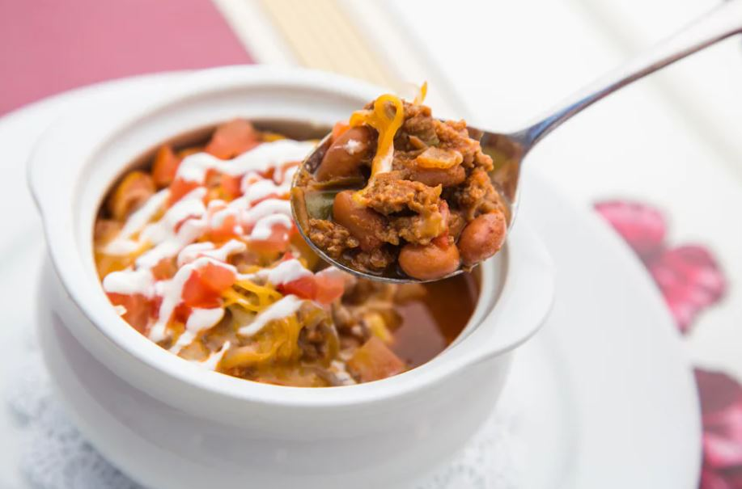

Walt's Chili

A variation of Walt's personal recipe dating back to around 1958
Serves 6 to 8
Ingredients
- 1/4 cup olive oil, divided
- 3/4 pounds beef stew meat
- 1 small onion, diced
- 1 medium green pepper, diced
- 4 cloves garlic, minced
- 1 pound ground beef
- 1 tablespoon ground cumin
- 1 1/2 tablespoons chili powder
- 1 tablespoon onion powder
- 3/4 teaspoon cayenne pepper
- 3 tablespoons tomato paste
- 2 plum tomatoes, diced
- 1 (28 ounce) can diced tomatoes
- 2 tablespoons beef base
- 1 1/2 cups water
- 1 (14.5 ounce) can pinto beans, rinsed and drained
- Coarse salt, to taste
Instructions
- Saute onions, green pepper and stew meat
- Add ground beef
- Add seasonings and beans
- garnish with sour cream, shredded cheese, and diced tomatoes
Return to main page